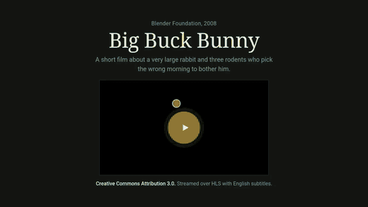
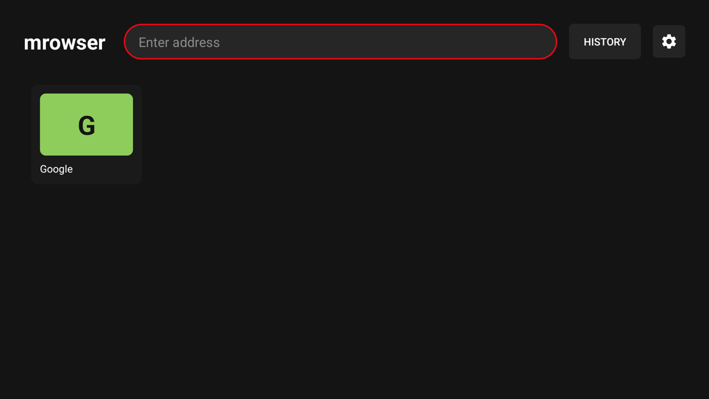
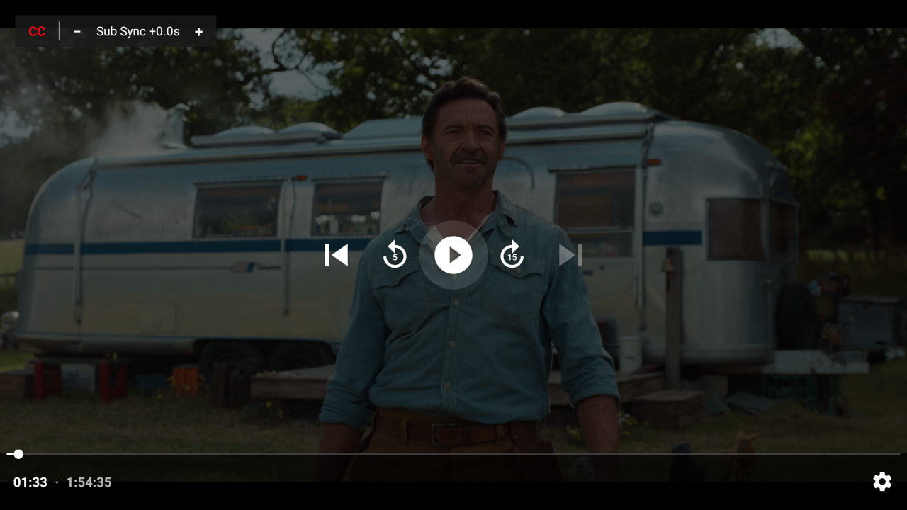

Watch video from websites your TV has no app for — in a real player, properly in sync.
Watching anything on a TV box means whatever apps the store happens to carry. A site with the video you want, and no app to match, is simply out of reach.
The rare TV browser that opens the site plays the video inside the WebView, whose player slowly loses A/V sync. Lips lead the sound, and it never recovers.
Websites assume a mouse. A D-pad cannot hover a menu, reach a small control, or click a link that was never made focusable.
Open a site, start its video, and mrowser takes over. It watches the page's own requests for the HLS stream and hands it off the moment one appears — carrying the session's User-Agent, Referer and cookies across so it keeps working. No catalog, no app per site.
Playback moves to a native Media3 / ExoPlayer activity instead of the WebView, which is what keeps audio locked to picture end to end. Real quality selection, audio-track switching and playback speed come with it.
Side-loaded subtitles are rarely quite in step. mrowser renders VTT and SRT itself, so one press shifts their timing by half a second — up to thirty — instantly, with no rebuffer and no restarting the film.
A virtual cursor driven by the D-pad, with acceleration and edge detection. Hover menus, small controls and non-focusable links all become clickable. OK clicks, a long press switches to focus navigation, and speed is adjustable.
BACK drops you onto the page exactly where you left it, and the play chip takes you straight back into the video. Favourites grid, browsing history, HTML5 fullscreen, and an address bar that opens on a held BACK for remotes with no MENU key.
One permission: INTERNET. No Play Services, no accounts, no analytics, no telemetry. Plain Kotlin, no Compose beyond Media3, a single module — light enough for weak TV boxes.



| Key | Action |
|---|---|
| D-pad arrows | Move the cursor, with acceleration and edge detection |
| OK | Click at the cursor |
| OK long-press | Switch between cursor mode and focus mode |
| MENU or BACK held | Open the address bar — the hold is for remotes with no MENU key |
| BACK tapped | Address bar → page history → close page → home |
| − / + in the player | Shift subtitle timing by 0.5s, live, with no rebuffer |
app-release.apk from the latest release.adb install.For automatic updates, add the repository to Obtainium as an app source:
https://github.com/m-salehi-v/mrowserWhat it covers: sites that stream over HLS, which is most of the streaming web. DASH-only sites (YouTube among them), progressive MP4 files, and DRM/Widevine content are not handed off — those still play in the browser, just without the native player.
mrowser hosts, bundles, indexes and links to no content. It ships with no preset sites or bookmarks, and it does not circumvent DRM — Widevine streams stay in the WebView. Use it only to access content you are authorised to access.